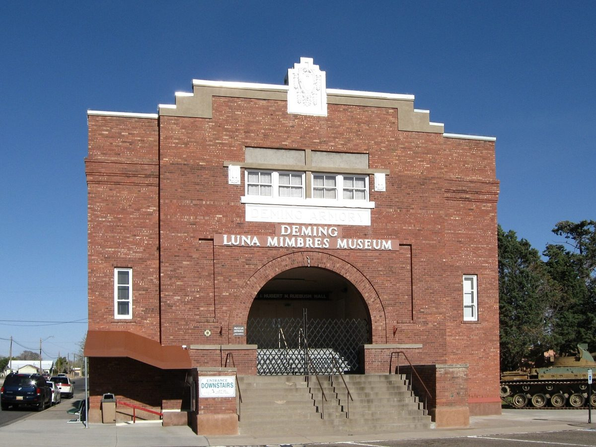

🏺Deming Luna Mimbres Museum
A 1916 armory stuffed with a county's worth of treasures. The reason to stop is the Mimbres pottery, from about 950 to 1250.
Tuesday to Saturday 9 to 4, free. Closed Thanksgiving, Christmas, New Year's Day. Dust storms can close I-10 near Lordsburg.